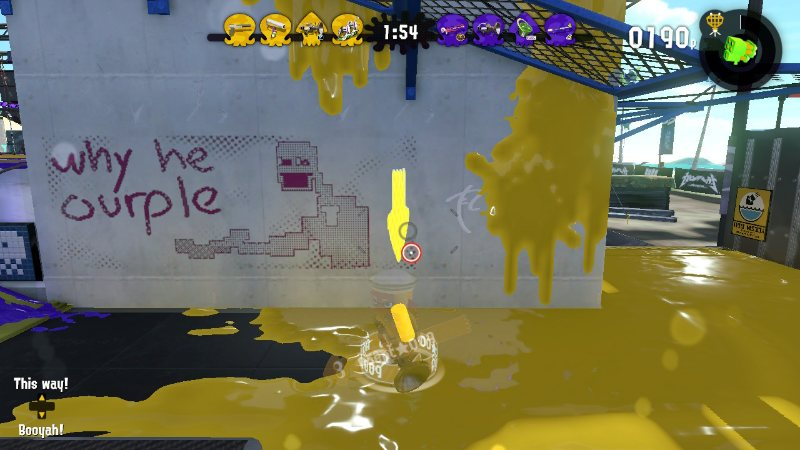
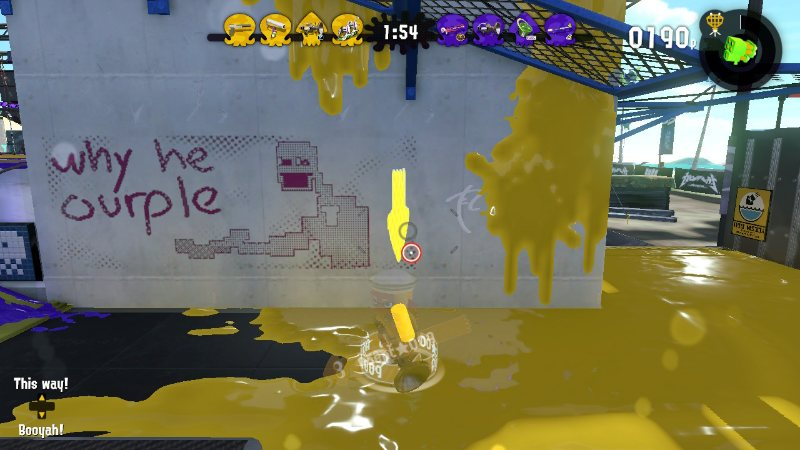
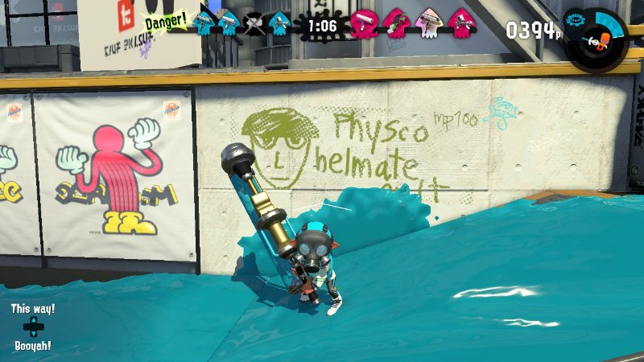
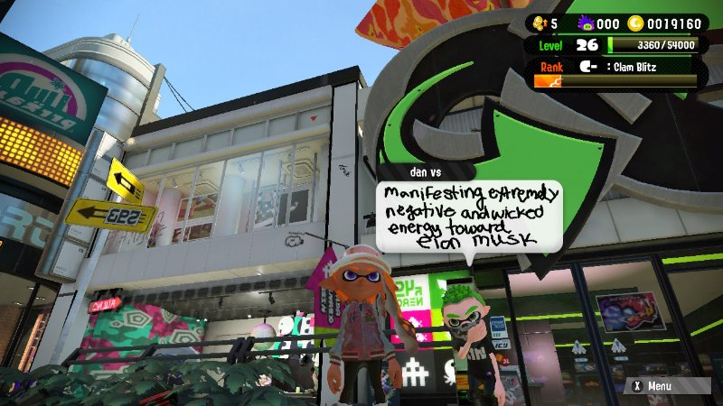
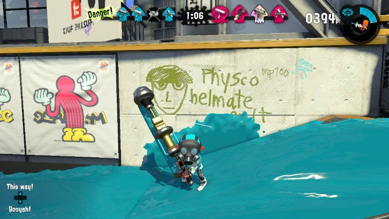
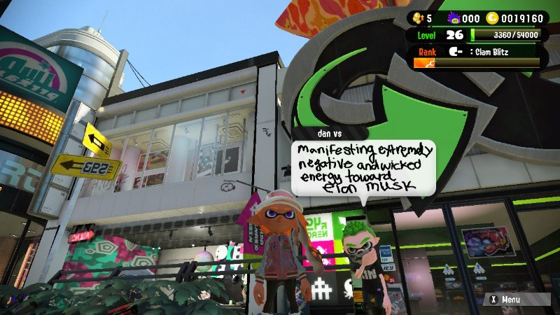

splatoon 2
logs
13.oct.24 my girlfriend also has the octo expansion unlocked because of the online membership she has so i've been playing that recently too! i've never really fucked that much with splatoon 2's story mode levels. i think i've played half of them. they are just okay. at least from what i remember. but THIS? the octo expansion has been so much FUN to play!!!! i love how its so much more than just going from point A to point B. i will say that some levels are kinda crazyyyy like the ride the tower ones or protect the orbs. but i still appreciate the variety.
02.oct.24 been needing an Online Game Fix so i redownloaded splatoon 2 and been literally playing from the ground up cus i'm using my girlfriend's account (who has the nintendo online membership. i don't have that.) to be able to play. i dont care if it's $5 per month, i'm not paying for that shit.
14.apr.24 bought it around... 2021 i think... i loved this game but i think i simply just got burned out. never a ranked guy. single story mode was pretty cool but i didn't finish it either. maybe one day!
screenshots
 

 


